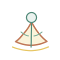
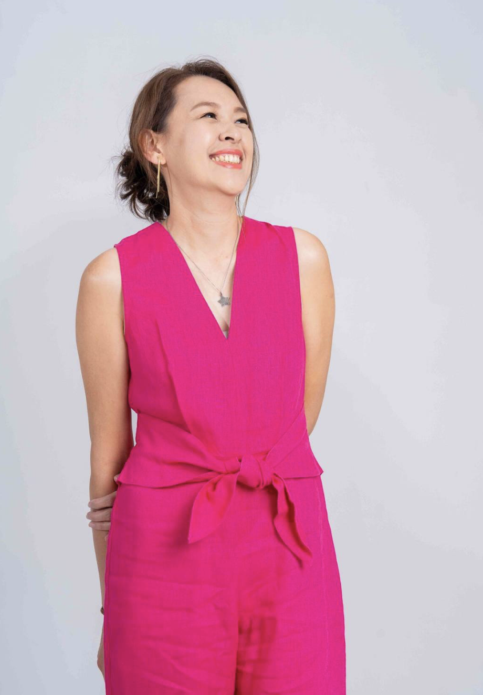

01
全台獨創｜48種原創美學教學法
我們將義大利瑞吉歐學派「孩子擁有一百種語言」的精神深耕本土，獨創出涵蓋感官感知、結構空間、媒介實驗、概念思辨等「48種藝術教學法」，如痕跡感知法、線性節奏法、抽象組構法等。透過國家、繪本、在地文化等八大主題有脈絡的引導，讓孩子在每一次創作中，練習拆解問題、建構邏輯，並發展出無法被複製的自主思考風格。
從孩子出發，打造陪伴長隨一生的「思維與情緒」生活藝術場域。
大綠地藝術的起點，源於兩位創辦人——花花老師與恐龍老師對兒童教育的全然專注。
我們深信，藝術不侷限於桌面上的一張圖畫，而是一套跨越學科的思考工具。大綠地教的不只是拿筆畫畫，更是以藝術為媒介，培養孩子的「創感力」——在 AI 時代最需要、也最難被取代的能力。
在這裡，藝術課程是最終的呈現，但「過程中的思維鍛鍊」才是大綠地的核心精髓。
我們將義大利瑞吉歐學派「孩子擁有一百種語言」的精神深耕本土，獨創出涵蓋感官感知、結構空間、媒介實驗、概念思辨等「48種藝術教學法」，如痕跡感知法、線性節奏法、抽象組構法等。透過國家、繪本、在地文化等八大主題有脈絡的引導，讓孩子在每一次創作中，練習拆解問題、建構邏輯，並發展出無法被複製的自主思考風格。
大綠地在藝術探索中，深度融合了情緒教育。課程中融入情緒觀察與引導技巧，協助孩子透過色彩、筆觸與異材質實驗，將內在抽象的焦慮、快樂或挫折轉化為具象作品。我們深入瞭解並轉譯孩子的狀態，陪伴他們在「情緒修補法」中學會與不完美共處，從而建立起強大的自信心與自我價值感。
我們不是傳統的美術班。大綠地不提供標準範本、不複製框架，也不對作品進行精美度的評比。我們刻意留白，給孩子嘗試錯誤與解決問題的空間。我們更在乎的是：孩子在這裡，有沒有用自己的節奏發現內在的聲音？有沒有越來越喜歡自己？
我們不急著教固定的技巧，而是帶著孩子在玩樂中學習、在實驗中思考、在包容中表達。大綠地陪伴孩子培養的，是面對 AI 時代時，長隨一生的創感力——感受、思考、判斷，與做自己的勇氣。
Creansense｜AI 時代最需要、也最難被取代的四種核心能力
從五感出發，對外在訊息與內在狀態產生覺察。感受到了，才有辦法表達。
「你摸到這個質地，讓你想到什麼？」
學習命名、理解自己的情緒狀態，透過創作把抽象的感受轉為具體語言。
「你今天的心情，是哪個顏色？」

將模糊的想法具象化，建立屬於自己的表達風格——這是 AI 時代最關鍵的能力。
「我想說的事，只有我能畫出來。」
在不示範、不套版的環境裡練習做決定、承擔選擇——這是 AI 無法替代的能力。
「沒有標準答案，你怎麼想？」
AI 不能取代有判斷力的人。
而判斷力，從藝術課開始訓練。
這是創感力，也是大綠地二十年來一直在做的事。
孩子天生就懂得用身體、聲音、顏色表達自己。我們的角色不是教，而是不要打斷他已經在做的事，陪著他繼續說下去。
課堂中，我們不急著講解「怎麼畫」，而是先問一句：「你今天想說什麼？」每一次創作，都是一場內在的對話。
藝術不是被切割出來的一小塊時間，而是融入日常的感受力與想像力。孩子從安平樹屋學習自然與建築，從青花瓷學習圖紋的故事。
老師不是評分的評審，而是孩子創作旅程的陪伴者與情緒翻譯員。從孩子的畫作線條、顏色與結構中，讀懂他正在說的話。
義大利瑞吉歐教育：材料是「第三位老師」，孩子透過觸摸主動發現創作方式。法國龐畢度：不給標準結果，讓孩子產生獨立連結。
課程圍繞八大主題、48種歐洲藝術方法論發展，每個單元設計了多元媒材與開放引導，讓孩子透過創作建構自我，發展出屬於自己的觀看方式。

花花老師以5年幼教現場、15年兒童藝術教育與20年教學實務為基礎，深信每個孩子天生都有表達的能力，只是需要被看見、被理解的空間。她設計出融合義大利瑞吉歐教育理念與歐洲當代藝術觀點的獨創課程，讓創作成為孩子認識自己的旅程。
她同時是三個孩子的媽媽，以自身的育兒經驗與專業的兒童藝術解讀能力，協助家長從孩子的畫作中讀懂情緒、建立連結。
在 AI 無法取代判斷力的時代，他更懂得感受、傾聽，以及清晰地表達他想成為的人。
「人類因夢想而偉大」，夢想來自於想像力。「想像力」是創造力之母，未來創意人才的培育，應從想像力教育開始。大綠地藉由不同的藝術啟發讓孩子由想像力進而提升美學力。
孩子不只是來完成作品，而是一步步在創作中建立自信，拓展理解力，慢慢成為一個能表達、能感受、也能同理他人的人。
歐洲的藝術教育早已不再是「教畫畫」，而是「讓孩子成為自己生命的策展人」與「從生活中感受世界」。大綠地正是將這樣的理念帶入台灣的地方。
透過家長工作坊，讓家長學習從孩子的畫作中讀懂情緒密碼，成為孩子最好的陪伴者。理解，是最深的愛。
讓我們一起種下創作的種子，陪孩子長出自信、勇氣與內在的力量